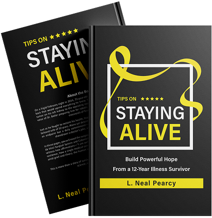

About The Author
Neal Pearcy
L. Neal Pearcy is a cancer survivor, health advocate, and author whose life experience gives his voice uncommon credibility. After a successful thirty-year career in computer marketing with AT&T, Pearcy turned to writing following a life-altering kidney cancer diagnosis at age seventy-two.
What could have been an ending became a beginning. Twelve years later, now cancer-free at eighty-four, Pearcy has dedicated himself to helping others understand their health, navigate complex systems, and reclaim confidence in the future. His work reflects resilience shaped by survival, loss, and clarity gained through adversity.
Beyond his professional life, Pearcy is a father, grandfather, and great-grandfather. Family, longevity, and dignity in aging are central themes throughout his writing. His perspective is deeply human, grounded in lived experience rather than theory.
Pearcy writes with honesty, urgency, and respect for healthcare professionals, while advocating for patients who often feel overwhelmed or unheard. His mission is not to replace doctors, but to empower individuals with knowledge, awareness, and realistic hope.
Through his books and ongoing commentary, Neal Pearcy continues to speak for those navigating healthcare’s most critical moments.
About The book
STAYING ALIVE
Build Powerful Hope from a 12-Year Illness Survivor” is a book more than a memoir; it’s a practical guide for anyone navigating the stormy seas of life’s adversity. Neal Pearcy writes his genuine personal experience about illness and gives us a truthful and personalized account that most readers can relate to. His story shows the general power of resilience and how a single individual can endure hardship and get tougher. In the darkest times, Pearcy’s is a shining beacon of hope, reminding us that there is always growth and renewal, no matter what.
Also, this memoir is teeming with real-world advice that encourages readers to take charge of their health by learning to navigate the medical system and medical terminology. Neal explores the emotional boundaries of dealing with disease, the core of fear, bereavement, and the indomitable human spirit. He emphasizes the value of community and the connections of belonging, urging readers to cultivate care networks through adversity. Self-affirmation and positive thinking strategies arm readers with strategies to develop strength and hope in their own lives. It is through his mentors that Pearcy stresses the difference that guidance can make and reminds us not to take help for granted in our own lives. Finally, this book deals with universal themes of struggle, hope, and searching for meaning; as such, it is an absolute must-read for anyone who needs some inspiration when the chips are down.
Reading this book is not learning Neal’s biography; it’s knowing your strength and that you are not alone.

About The book
The Future Of Healthcare
The Future of Healthcare is a powerful, firsthand exploration of what happens when a patient survives cancer and comes face to face with a broken medical system. Neal Pearcy takes readers inside today’s healthcare reality, where aging patients manage multiple specialists, endless appointments, and disconnected care that often overlooks the whole person.
Drawing from his own kidney cancer survival and twelve years of post-treatment life, Pearcy exposes why traditional healthcare models are no longer sustainable. He explains how rising costs, over-specialization, and system overload have quietly reshaped patient experiences, often at the expense of clarity, dignity, and access.
But this book is not written in despair. It points forward. Pearcy introduces a new healthcare model powered by artificial intelligence, where one primary doctor is supported by global medical knowledge, coordinated insight, and modern technology. The result is care that is personal again: accessible, informed, and centered on human connection.
This book offers understanding, direction, and hope for anyone navigating health in a rapidly changing world.
Testimonials
BOOK REVIEWS
Read how The Future of Healthcare has resonated with readers navigating illness, aging, and uncertainty. These reflections come from individuals who found clarity, reassurance, and renewed confidence through Neal Pearcy’s insight.
“This book explained what I’ve been feeling for years about healthcare—but couldn’t put into words.”
B. Dale
Founder & CEO
“Clear, honest, and deeply reassuring. It helped me understand my options without fear.”
Alexender
Manager
“A rare book that respects doctors while truly advocating for patients.”
J. Blume
Customer
“I bought Staying Alive for my father after his diagnosis. He finished it in two days and called me on the third. That call told me everything I needed to know about this book.”
Patricia M., Ohio
“The Future of Healthcare should be handed out at every hospital discharge. I’ve spent four years trying to explain to my mother why her five specialists never talk to each other. Neal explained it in one chapter.”
Sandra K., Florida
“I’m a nurse of 22 years and I still learned something. More importantly, I felt something. That doesn’t happen often with health books.”
Renee T., RN, California
“My husband passed last year after a long illness. I wish I had found Staying Alive sooner. Not just for him. For me.”
Carol B., Pennsylvania
“I flagged so many pages in The Future of Healthcare that my copy is basically half sticky notes now. This is the conversation we should all be having.”
Theresa N., New York
“At 79 I didn’t expect a book to change how I think about my own health. This one did. I went to my next doctor’s appointment with a list of questions I never would have thought to ask before.”